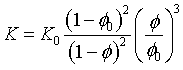

Carman-Kozeny
The Carman-Kozeny relationship relates the total porosity to the permeability. The relation between the initial and modified hydraulic conductivity is:

where
|
K |
modified hydraulic conductivity (L/T) |
|
K0 |
initial hydraulic conductivity (L/T) |
|
ϕ |
modified porosity (-) |
|
ϕ0 |
initial porosity (-) |
The scaling factor of the hydraulic conductivity is thus obtained as:

The script hereafter calculates the scaling factor assuming that there is a script that calculates the porosity (calc_value("calc_porosity")):
|
[MY-BASIC] calculate_values Initial -state initial -mybasic -start porosity0 = calc_value("calc_porosity") a = ((1-porosity0)^2 / porosity0^3) put_node("IniFactor",a) change_por(porosiy) change_por0(porosity) -end calc_update -state update -mybasic -start porosity = calc_value("calc_porosity") scale = (porosity^3 / (1-porosity)^2) * get_node("IniFactor") change_sfcond(scale) -end |
See also
Keywords, identifiers, scripting
How To...
Examples
Created with the Personal Edition of HelpNDoc: Powerful and User-Friendly Help Authoring Tool for Markdown Documents